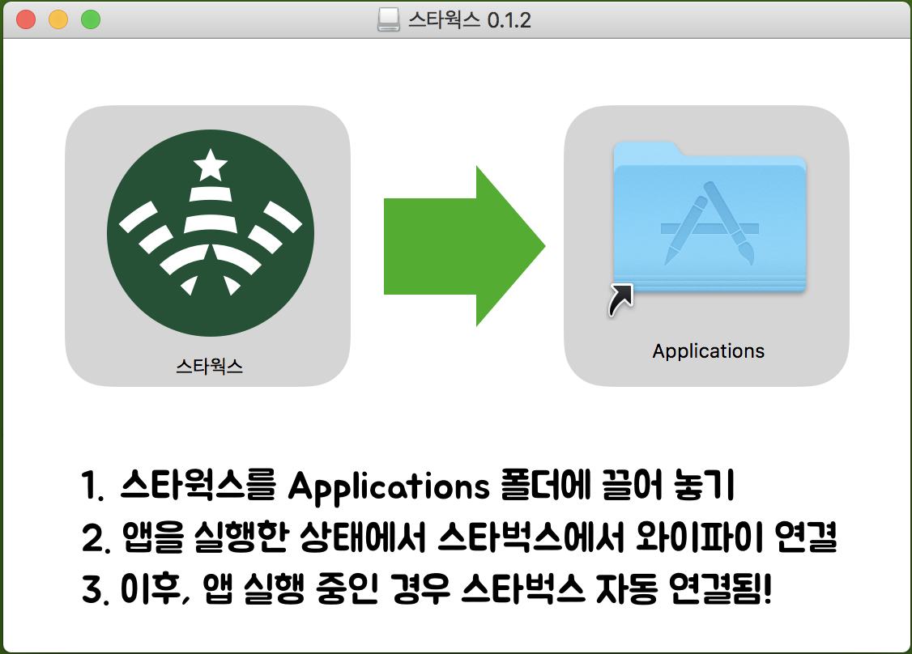
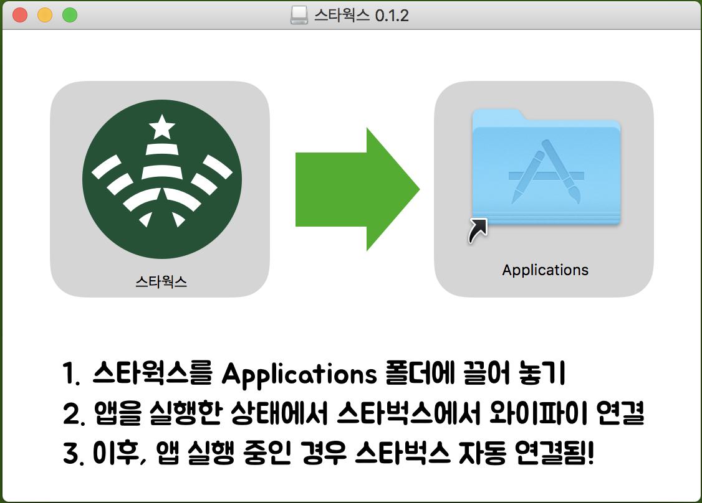

사용법

다운로드 받은 dmg 파일을 열면 위 화면이 보이며, 스타웍스를 /Applications 폴더로 드래그 드랍하고 실행합니다. 자주 쓰신다면 '로그인 시 자동실행' 메뉴를 체크합니다.
개발기
아래는 이 앱을 개발하며 미디엄에 적은 글입니다. 혹시 이 앱의 개발 배경과 과정이 궁금하신 분들은 읽어보시면 재밌으실지도 모릅니다.

다운로드 받은 dmg 파일을 열면 위 화면이 보이며, 스타웍스를 /Applications 폴더로 드래그 드랍하고 실행합니다. 자주 쓰신다면 '로그인 시 자동실행' 메뉴를 체크합니다.
아래는 이 앱을 개발하며 미디엄에 적은 글입니다. 혹시 이 앱의 개발 배경과 과정이 궁금하신 분들은 읽어보시면 재밌으실지도 모릅니다.